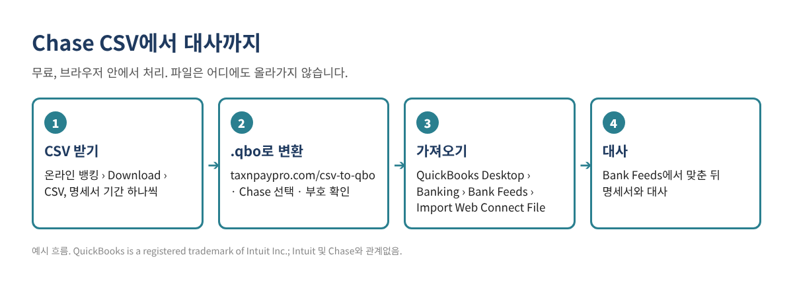

Chase CSV를 QuickBooks Desktop으로 가져오는 법 (무료 QBO 변환기)
Chase에서 거래 내역을 CSV로 받았는데, QuickBooks Desktop은 CSV를 은행 계좌에 바로 넣지 못합니다. Desktop이 받는 것은 Web Connect(.qbo) 파일이고, 오래된 버전은 IIF 파일입니다. 이 글에서는 Chase CSV를 받는 법, 열 구성, 브라우저에서 무료로 .qbo로 바꾸는 법, 가져온 뒤 확인하는 법까지 순서대로 설명합니다.
요약: Chase에서 CSV 받기 → 무료 CSV→QBO 변환기 열기 → 은행에서 Chase 선택 → 미리보기와 잔액 확인 → .qbo 저장 → QuickBooks Desktop에서 Banking › Bank Feeds › Import Web Connect File.

1단계. Chase에서 CSV 받기
컴퓨터에서 온라인 뱅킹에 로그인합니다(대부분 은행은 휴대폰 앱에서는 내려받기를 지원하지 않습니다). 계좌를 열고 거래 목록 위의 Download 또는 내려받기 아이콘을 찾습니다. 기간을 고르고 CSV(은행에 따라 "Spreadsheet", "Comma delimited")를 선택합니다. 메뉴 이름은 가끔 바뀌니, 안 보이면 은행 도움말에서 "download transactions"를 검색하세요.
2단계. Chase CSV 형식 알아 두기
변환기는 아래 Chase 형식을 알아보고 열과 부호를 자동으로 맞춥니다. 형식을 알아 두면 잘못 받은 파일을 바로 알아챌 수 있습니다.
| 파일 | 열 구성 (2026년 기준) | 주의할 점 |
|---|---|---|
| 입출금 계좌 | Details, Posting Date, Description, Amount, Type, Balance, Check or Slip # | 나간 돈은 마이너스(-)이고, 수표 번호는 "Check or Slip #" 열에 있습니다. |
| 신용카드 | Transaction Date, Post Date, Description, Category, Type, Amount, Memo | 카드 사용액은 마이너스(-), 결제는 플러스(+)입니다. 변환기는 Post Date(반영일)를 씁니다. |
변환기가 읽은 뒤의 모습은 아래와 같습니다. 예시 값이며 실제 거래가 아닙니다.
| 날짜 | 거래처 | 금액 (QuickBooks 부호) |
|---|---|---|
| 10/03/2026 | COFFEE SHOP #12 (예시) | -8.75 |
| 10/05/2026 | OFFICE SUPPLY STORE (예시) | -142.30 |
| 10/07/2026 | CLIENT DEPOSIT (예시) | 500.00 |
3단계. CSV를 .qbo 파일로 바꾸기
- taxnpaypro.com/csv-to-qbo를 엽니다. 파일은 브라우저 안에서만 읽고 어디에도 올라가지 않습니다.
- CSV 파일을 끌어 넣고 은행 목록에서 Chase를 고릅니다(자동 인식에 두어도 됩니다).
- 미리보기에서 날짜, 거래처, 특히 금액의 부호(+/-)를 확인합니다.
- 청구서·명세서의 마감 잔액이 있으면 입력합니다. 파일과 비교해서 차이가 있으면 가져오기 전에 알려 줍니다.
- 계좌 번호 끝자리를 넣고 .qbo 파일로 저장합니다. QuickBooks 버전이 Web Connect를 더 지원하지 않으면 .iif로 저장합니다.
4단계. QuickBooks Desktop으로 가져오기
- 먼저 회사 파일을 백업합니다.
- Banking › Bank Feeds › Import Web Connect File에서 저장한 .qbo 파일을 엽니다.
- 처음 한 번은 Use an existing QuickBooks account를 고르고 맞는 은행·카드 계좌를 선택합니다. 엉뚱한 계좌에 연결하는 것이 가장 흔한 실수입니다.
- Bank Feeds Center에서 거래를 추가하거나 기존 거래와 맞춘(Match) 뒤, 명세서와 대사(Reconcile)합니다.
입출금 계좌와 카드는 따로 내려받으세요. 파일마다 QuickBooks의 다른 계좌로 들어갑니다.
자주 하는 실수
- 기간이 겹침. 10/1~10/31을 받은 뒤 10/15~11/15를 또 받으면 같은 거래가 두 번 들어갈 수 있습니다. 명세서 기간에 맞춰 이어지게 받으세요.
- 부호가 반대. 입금이 지출로 보이면 형식을 잘못 읽은 것입니다. 은행 목록에서 Chase를 고르고 미리보기를 다시 보세요.
- 계좌를 잘못 연결. .qbo 파일에는 계좌 번호가 들어 있어서, 처음 연결이 틀리면 다음 파일도 같은 계좌로 갑니다.
- 오래된 QuickBooks 버전. Web Connect는 Intuit가 지원하는 버전(보통 최근 3개 버전)에서만 됩니다. 오래된 버전은 IIF를 쓰세요.
- 대기 중인 거래. 아직 확정되지 않은(Pending) 거래는 빼세요. 금액이 바뀌거나 사라질 수 있습니다.
자주 묻는 질문
은행 파일을 온라인 변환기에 넣어도 안전한가요?
이 변환기는 브라우저 안에서만 작동하고 파일을 서버로 보내지 않습니다. 그래도 은행 비밀번호는 누구와도 공유하지 말고, 다 쓴 파일은 지워 두세요.
Chase가 QuickBooks용 파일을 직접 주지 않나요?
은행과 계좌 종류에 따라 주기도 합니다. 은행이 준 QuickBooks(Web Connect) 파일이 오류 없이 들어가면 그것을 쓰세요. 변환기는 CSV밖에 없거나 은행 파일이 안 들어갈 때 쓰는 도구입니다.
"unable to verify the financial institution" 오류가 나요.
QuickBooks는 .qbo 파일 안의 은행 ID를 확인합니다. 변환기 설정에서 은행 ID(INTU.BID)를 바꿀 수 있고, 기본값 3000은 많은 은행에서 쓸 수 있습니다.
QuickBooks Online을 쓰는데 필요한가요?
보통은 필요 없습니다. QuickBooks Online은 Banking 화면에서 CSV를 바로 올릴 수 있습니다. 이 글은 QuickBooks Desktop용입니다.
확인 목록
- ☐ 명세서 기간 하나만큼 CSV 받기
- ☐ 변환기에서 은행을 Chase로 선택
- ☐ 미리보기에서 부호 확인
- ☐ 마감 잔액 비교
- ☐ 회사 파일 백업
- ☐ 처음 가져올 때 맞는 계좌에 연결
- ☐ 명세서와 대사 완료
가져온 뒤 정리용 엑셀이 필요하시면, 중복 거래·대사 차이 찾기 키트를 무료로 받으세요(엑셀 + PDF 가이드, 가입 없음).
이 글은 일반적인 정보이며 세무·법률·회계 자문이 아닙니다. 은행 메뉴와 파일 형식은 바뀔 수 있으니 가져오기 전에 내 파일을 꼭 확인하세요. 예시 금액은 지어낸 값입니다.
QuickBooks is a registered trademark of Intuit Inc.; not affiliated with or endorsed by Intuit. Chase은(는) 해당 회사의 상표이며, 이 글은 Chase와(과) 관계가 없고 보증을 받지 않았습니다.